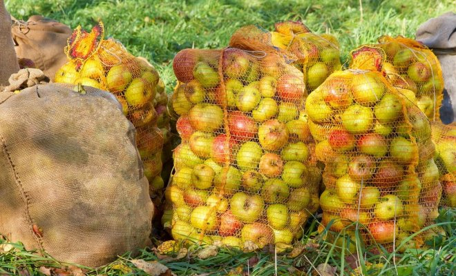
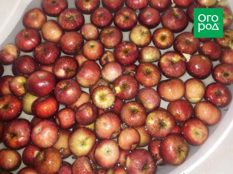
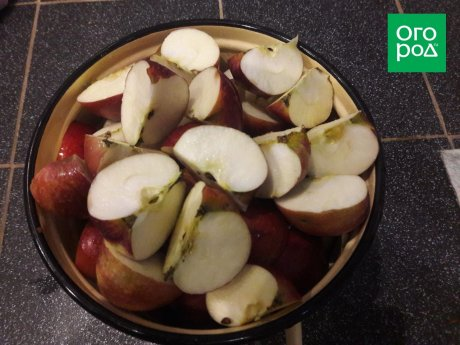
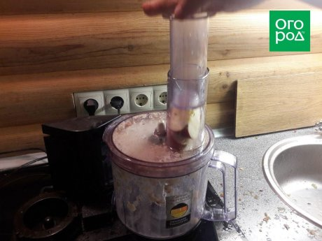
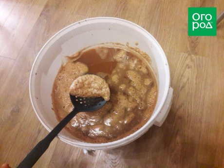
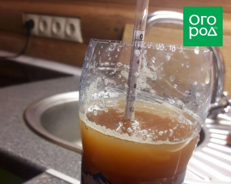
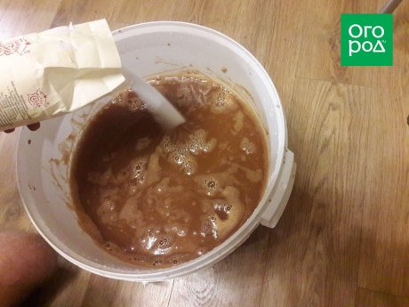
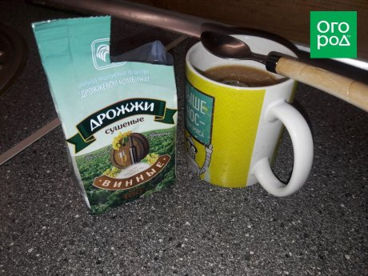
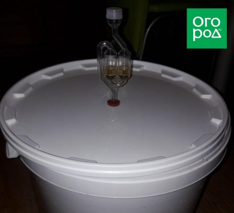
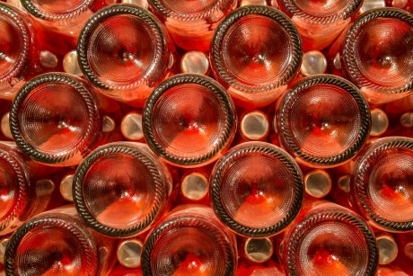

Что делать, если у вас два мешка яблок? Мастер-класс по приготовлению яблочного вина

shutterstock.com
Многие садоводы страдают от цикличности плодоношения яблонь. В первый год на весь сад наберется от силы два десятка плодов, а во второй яблоками заняты все мешки, корзины и ведра. Из этого урожая можно без особых усилий приготовить вкусное домашнее вино.
Чем сочнее и слаще яблоки, тем вкуснее получится напиток, но при необходимости можно готовить вино и из кисло-сладких сортов. Для реализации своего плана вам потребуются:
Как приготовить вино из яблок своими руками
После того, как все необходимые продукты и оборудование будут подготовлены, можно приступать к приготовлению вина дома. Основная работа занимает примерно 2-3 часа (в зависимости от объема яблок), но готовый напиток вы получите только через 2 месяца.
Помойте яблоки

Если вы срывали их с дерева и не опрыскивали никакими препаратами, достаточно просто ополоснуть под проточной водой. Если же это падалица, или вы обрабатывали сад от болезней и вредителей, желательно погрузить яблоки в емкость с теплой водой и тщательно потереть.
Порежьте яблоки на дольки

Яблоки среднего и маленького размера достаточно разрезать пополам или на четыре части, а более крупных сортов – на 6-8 частей. В это же время удалите с плодов плодоножки, а вот сердцевину не вырезайте – все лишнее отделится на следующих этапах.
Измельчите яблоки

С помощью кухонного комбайна с насадкой или обычной мясорубки превратите все яблоки в кашицу. Складывайте полученную массу в любую удобную емкость (кастрюлю, таз или ведро).
Процедите массу через ткань
Возьмите квадрат марли или тюля размером 50×50 см, накройте им кастрюлю. Выложите в центр 1 л яблочной массы, сверните ткань в мешочек и отожмите сок. Сухую массу можете выбросить или отправить в компост.
Если у вас есть соковыжималка, эту работу выполнять не придется, и время приготовления изрядно сократится.
Снимите с сока пену

Для этого подойдет шумовка или большая ложка. В принципе, пена не опасна и, если ее оставить, хуже не будет.
Измерьте сахар в полученном соке

Для этого возьмите высокую узкую посуду, налейте в нее сок и погрузите сахарометр. Шкала покажет вам стартовый уровень сахара (обычно у яблок он колеблется от 9 до 13% объема).
Доведите процент содержания сахара до нужного

Постепенно вмешивайте в сок сахарный песок, доводя сладость до желаемого показателя. Для того чтобы дрожжи могли выработать максимум, вам понадобится остановиться на уровне сахара 20-25% объема.
В нашем случае изначальная сладость сока составила 13, а доводили мы до 20. На 23 литра нам потребовалось 2 кг сахара. Чтобы не ошибиться, вносите сахар порциями по 500 г и каждый раз после вымешивания измеряйте уровень сладости сахарометром.
Внесите дрожжи

Возьмите 1-2 ч.л. винных дрожжей на каждые 10 л сока. Размешайте дрожжи в стакане теплого полученного сока или стакане теплой воды (до 30°С) и влейте в емкость для сбраживания, где уже должен быть остальной сок. Еще раз все перемешайте.
На упаковке дрожжей всегда есть инструкция. Если она отличается – следуйте ей, а не нашим рекомендациям, поскольку разные штаммы дрожжей требуют разной подготовки к внесению.
Установите гидрозатвор

Если вы купили пластиковую емкость с гидрозатвором, закройте крышку, налейте в затвор 20-30 мл воды или крепкого алкоголя и установите на место. Если же вино вы ставите по старинке в банках, натяните на горлышко каждой медицинскую перчатку с проколотым пальцем. Поставьте емкости в теплое место и оставьте на 2-3 недели.
Примерно через сутки гидрозатвор начнет булькать, а перчатка – надуваться. Это будет означать, что процесс брожения пошел.
Снимите вино с осадка
После того, как брожение прекратится (гидрозатвор затихнет, перчатка опустится) вино нужно снять с осадка. Для этого его с помощью тонкой трубочки переливают в другие емкости меньшего объема. Подойдут стеклянные банки или бутылки. Переливать нужно осторожно, чтобы осадок остался в емкости для сбраживания.
Через 2-3 недели еще раз снимите вино с осадка.
Уберите вино в холод

Наступает последний и самый долгий этап в жизни вашего домашнего вина. Бутылки нужно убрать в прохладное темное место (погреб, подпол, холодильник) и оставить на 2-2,5 месяца. За это время напиток осветлится, наберет вкус и потеряет игристость.
По этому рецепту можно готовить вина из груш, вишни, сливы и других ягод и фруктов. Получившийся напиток будет легким и приятным на вкус.
Яблоки, снятые с дерева, я не мою, чтобы не смыть винные дрожжи, которые как раз на кожуре и находятся. Давно уже делаю яблочное вино – ни разу винные дрожжи не добавляла, просто сок и яблочная мезга. И получается отличное вино! Если сок сладкий, сахар не добавляю. (Татьяна Бочеева)